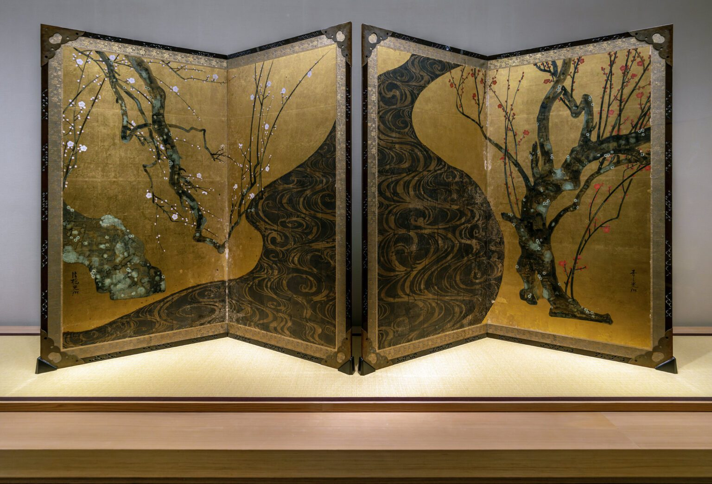
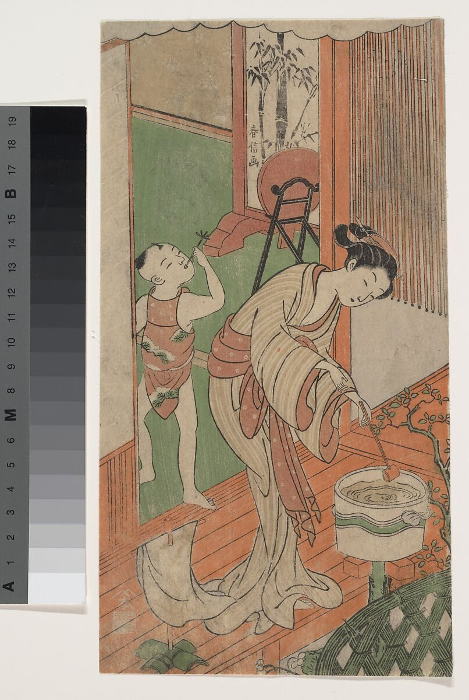
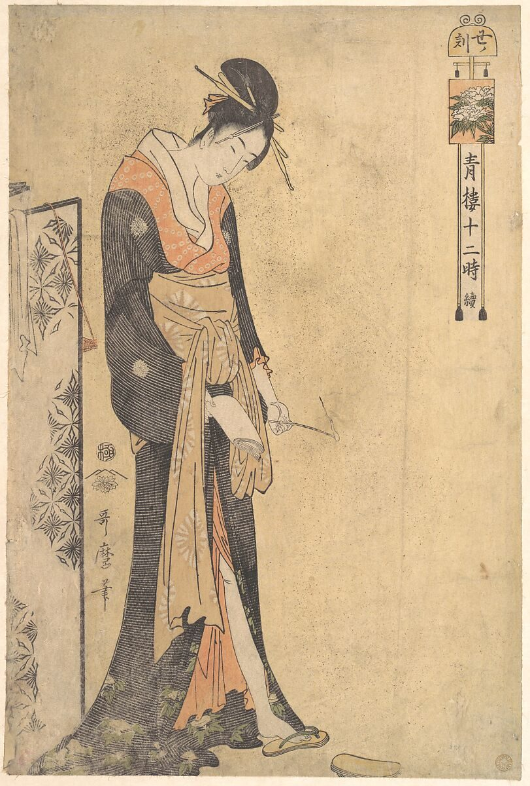
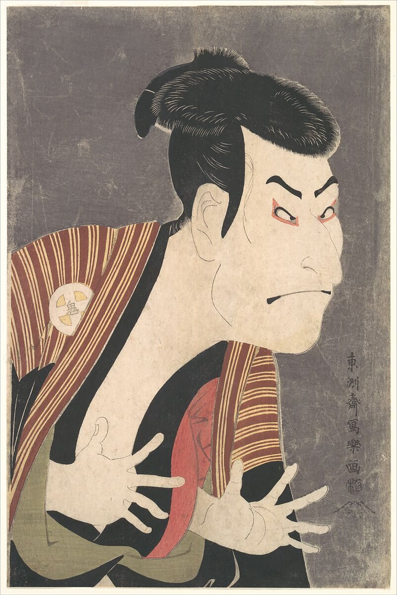
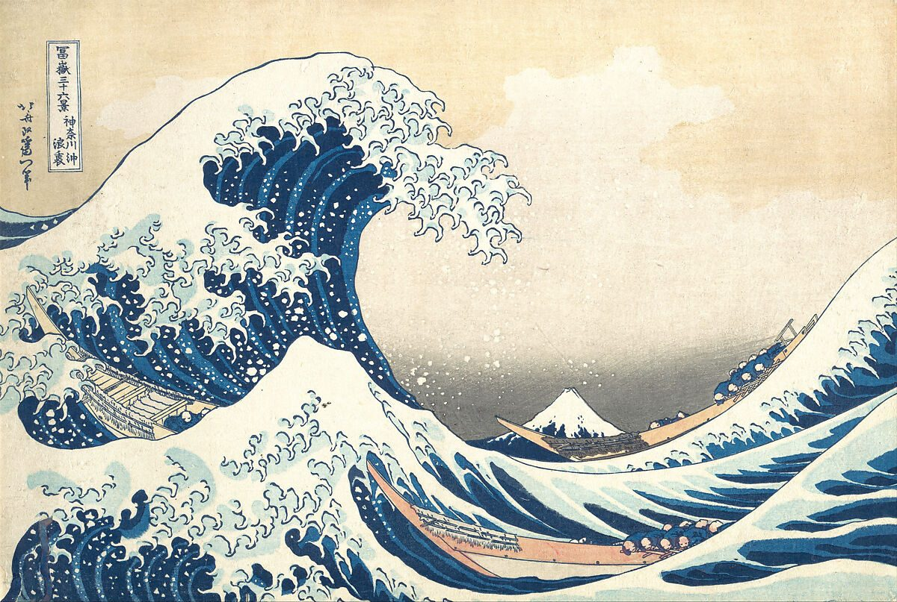
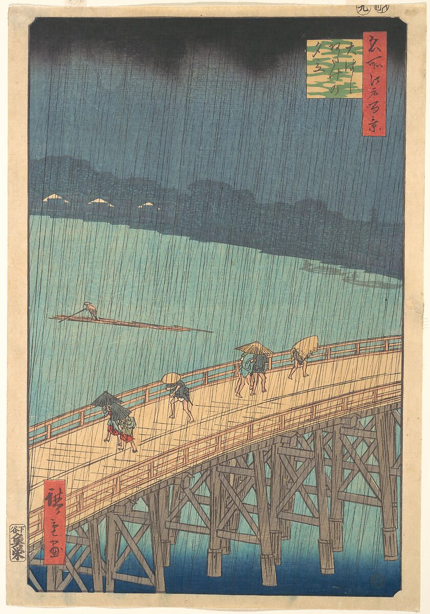
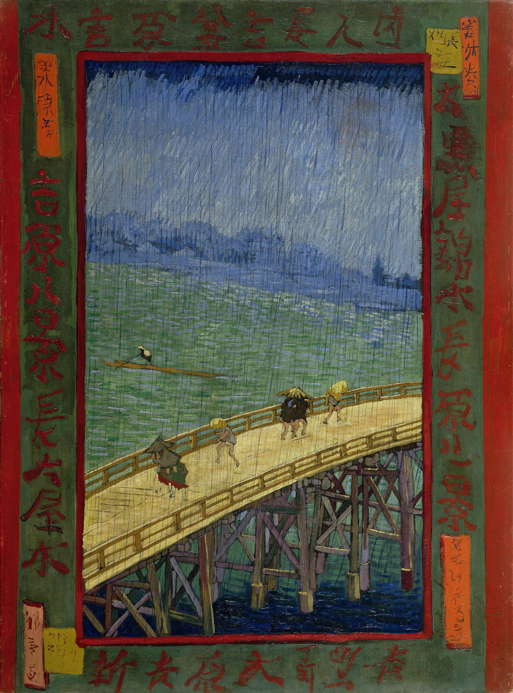
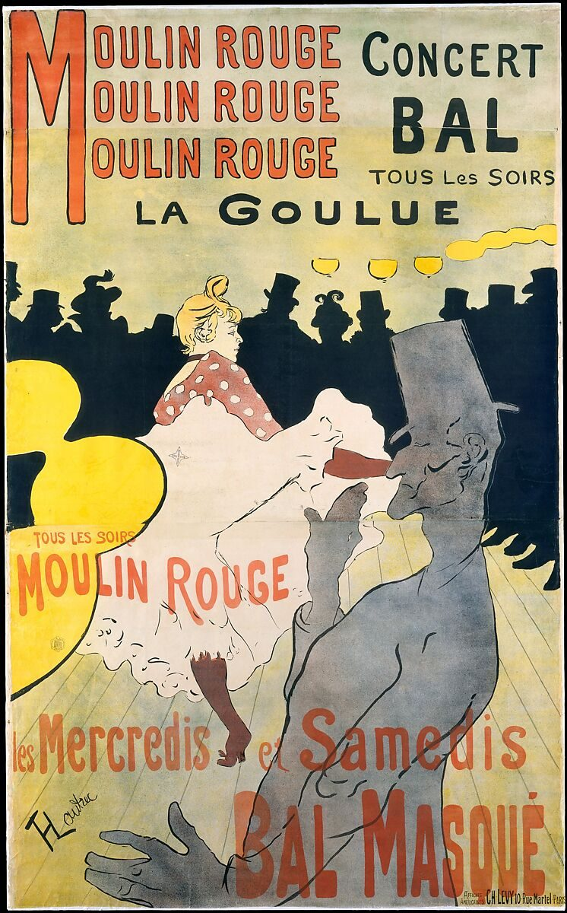

Late 1600s - Prints Become Public Media From painting traditions to reproducible images
Hishikawa Moronobu
At this early stage, ukiyo-e prints begin to reflect everyday life rather than elite subjects. Moronobu's work shows scenes from the Yoshiwara district a space associated with entertainment, fashion, and social interaction. The images were created for a broader audience, making them more accessible than traditional paintings.
The production process is simple but revolutionary: a drawing is transferred onto a wooden block, carved so the lines remain raised, and printed onto paper. Because the block can be reused, the image can be reproduced many times. It stops being unique. It becomes part of a larger system of distribution.
What stands out here is how much the design depends on line. With little use of colour, contour and composition carry all the meaning. The image is forced to be clear and structured, which shows a very early form of graphic design, where readability is everything.


Ogata Kōrin
Kōrin's painted screen helps explain the visual background of ukiyo-e. His work emphasises flat surfaces, decorative pattern, and strong contrast rather than realistic depth. The use of gold backgrounds removes spatial illusion and focuses attention on shape and arrangement and pictorial grammar the printmakers would later inherit.
Moving from Kōrin to Moronobu, there is a shift
- painting→print
- unique object→reproducible image
- decoration→communication
1700s - Colour and Visual Complexity From line-based design to layered visual systems
Suzuki Harunobu
Harunobu introduces full-colour printing nishiki-e, or “brocade pictures.” Instead of one block, multiple woodblocks are used, each carrying a different colour. The printer must align the blocks precisely so the image comes together correctly.
This technical development changes how images function entirely. Colour is no longer decorative; it becomes part of the structure. It creates hierarchy, guides the viewer's attention, and adds emotional tone. The image becomes more dynamic, and far more effective as a form of communication.


Kitagawa Utamaro
Utamaro builds on Harunobu's system but pursues refinement rather than complexity. His compositions are closer, more controlled a single figure with subtle gestures and expressions.
The printing process is still complex, but the visual effect is simplified. Instead of showing many elements, the design emphasises mood and identity. It shows, beautifully, that communication can be achieved through restraint as much as through detail.
Tōshūsai Sharaku
Sharaku's work contrasts with Utamaro by using exaggeration instead of subtlety. The expression is intense and stylised, making the figure immediately recognisable a vivid demonstration that ukiyo-e has become a flexible system, able to carry many communicative tones.

Ukiyo-e evolves into a flexible system of communication.
- Harunobu→introduces colour
- Utamaro→refines composition
- Sharaku→exaggerates expression
1800 - 1850 · Peak Ukiyo-e From representation to strong visual impact
Katsushika Hokusai
Hokusai's Great Wave demonstrates a high level of design control. The curved wave dominates the composition, directing the viewer's attention, while Mount Fuji remains stable in the background which it helps deliberate tension between movement and stillness.
The use of Prussian blue, an imported pigment, is significant. It produces a deeper, more durable colour than earlier materials. Global trade, in other words, is literally influencing the visual palette. Even mass-produced, the image maintains undeniable impact.


Utagawa Hiroshige
Hiroshige's approach is more atmospheric. The rain is shown through diagonal lines, and the composition feels like a captured moment in time. The use of bokashi - colour gradation - creates subtle transitions that add depth without traditional perspective.
Here ukiyo-e is doing something new: it is communicating not just form, but environment and experience. The viewer doesn't just see the scene. They feel the weather.
Ukiyo-e expands its visual language while holding its core principles.
- Hokusai→bold, iconic composition
- Hiroshige→atmospheric, immersive design
Late 1800s - Global Influence From Japanese prints to modern graphic design
Vincent van Gogh
Van Gogh's work shows a direct line to ukiyo-e. He copies Hiroshige's composition keeps the flat colour areas, the bold outlines, the cropped framing. Even though the medium has changed from woodblock to oil, the structural thinking remains the same.
This is the proof that ukiyo-e is not simply a style. It is a system that can cross continents and mediums and still work.


Henri de Toulouse-Lautrec
Lautrec applies ukiyo-e's principles in a commercial context. The figures are simplified, the colours flat, the composition designed for quick recognition from a distance on a wall, at night, at speed.
This marks the transition from art to modern graphic design images made to communicate efficiently in public space. The poster is the print's direct descendant.